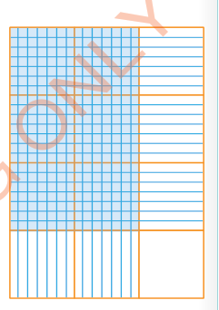
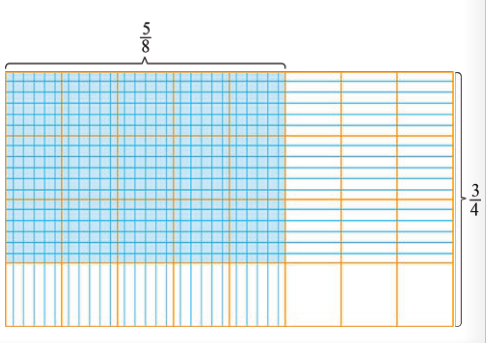

Example 3
Steps
1.
Draw four horizontal rectangles and three vertical rectangles within one larger rectangle.
2.
Shade horizontally and vertically.
3.
Count the number of squares that have been shaded twice: you get 6 squares units which is the numerator.
4.
The total number of squares, both shaded and unshaded is 12, which is the denominator.
Therefore,

Example 4
Steps
1.
Draw a rectangle and divide it into 4 equal parts horizontally and 8 equal parts vertically as shown in the following diagram.
